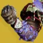

推荐者：
路人甲飞蛾手不祥之兆棱镜猎
 猎人 · 棱镜 · 创意S29 · 凯旋纪念碑
猎人 · 棱镜 · 创意S29 · 凯旋纪念碑
飞蛾手不祥之兆4手雷爽炸
适用环境
# 飞蛾手不祥之兆棱镜猎 推荐人：路人甲 描述：飞蛾手不祥之兆4手雷爽炸 更新：2026.9.18 场景：日常 分支：棱镜 强度：创意 核心：守蛾人裹手 ## 职业 职业：猎人#row:elements/class-abilities/分节/猎人 超能：暗影箭矢：狩猎陷阱#2722573683 星相：飞升#2835214901、火药博弈#2835214903 碎片：保护琢面#2626922120、黎明琢面#2626922126、平衡琢面#2626922114、使命琢面#124726498、希望琢面#2626922122 手雷：抓钩#2470512752 近战：陷阱炸弹#1139822081 职业技能：赌徒闪身#426473317 ## 武器 异域武器：不祥之兆#3821409356 传说武器：星狐座#3245446311 | 边打边劫#3700496672、高爆载荷#3038247973 传说武器：末日#713132408 | 超充弹匣#1511100135、爆炸光能#3194351027 ## 护甲 异域护甲：守蛾人裹手#3688534631 套装：溢冰#set:3090557911 2 件 × 国王的陨落#set:305091568 2 件 头盔：电弧虹吸#2724068510、特殊武器弹药搜寻者#2595839237、重型弹药搜寻者#554409585 护臂：动量转移#3599522901、鼓舞爆弹#3726719281、火力无限#2485657760 胸甲：震荡阻尼器#3719981603、电弧弹药生成#450381139、电弧弹药生成#450381139 腿部：药到病除#2194294579、电弧武器激涌#1834163303、电弧回收器#534479613 职业物品：面面俱到#4039026690、强力吸引#11126525、收割者#40751621 ## 神器 神器：杀手公爵药剂师背包 模组：苦痛之力#4037132133、轨迹证据#4037132132、削弱清敌#611645144、治疗能量球#611645146、置身其中#4037132135、电弧复合#3117519993、动能冲击#3117519994 ## 六维 六维：生命 ~ ｜ 近战 ~ ｜ 手雷 ~ ｜ 超能 ~ ｜ 职业 ~ ｜ 武器 180～200 ## 注解 非原创！参考了b站小黑盒得出一套清周常爽炸套装 注意！此套装为日常清周常用娱乐向，不适用于高难本。 老套装新吃法（ 本质丢丢猎（ 用了这套把把杀第一炸爽了 配置很自由随心搭 具体： 〇 这套核心就是飞蛾手和火药博弈能同时叠层手雷不断，不祥之兆击杀产生的飞蛾也能叠层，同时配合不祥之兆末日榴弹可以全程不换弹炸炸炸，注意不要开超凡手雷会被顶掉 ① 大招方面，随意，哪个顺手用哪个 ② 手雷方面，推荐钩爪，能和飞升热血沸腾组合技一定程度上弥补了机动,闪身就赌徒闪身 ③ 碎片方面，有希望琢面增加回转黎明琢面上焕光即可 ④ 武器方面，主手随意边打边劫高爆工具枪最顺手（火力战队行动掉落的忠侍左轮也有相同perk，主要星狐座好看） 威能强烈建议智谋刷一把超充弹匣爆炸光能的末日榴弹，常态下8发备弹配合超充弹匣能达到16发爽射！条件只需要有增幅后跑跑步，同时四号位爆炸光能提供60%增伤！最多存储7层，并且两电榴弹都能吃到神器电弧复合15%增伤 ⑤ 套装方面，就双弹药护甲，一般情况下单溢冰2就够了 ⑥ 六维方面，武器优先越高越好。手雷职业越高越好，近战够回转即可 ⑦模组方面，随意 ⑧操作方面，哪里亮了点哪里有手雷就丢根本用不完，可由虚空大 小零食 神器削弱清敌给首领上虚弱，飞蛾手雷或者不祥之兆多次击中目标产生的飞蛾致盲首领触发神器电弧复合 小技巧：牛子雷可以用枪或者手雷提前打爆伤害更高；使用钩爪后接飞升飞的更远；不祥之兆多次命中无需击杀也能产飞蛾 参考： ①https://api.xiaoheihe.cn/v3/bbs/app/api/web/share?h_camp=link&h_src=YXBwX3NoYXJl&link_id=b911720ffcf3&new_post_share_style=true ②https://api.xiaoheihe.cn/v3/bbs/app/api/web/share?h_camp=link&h_src=YXBwX3NoYXJl&link_id=9275721429a5&new_post_share_style=true
职业
武器
神器模组
护甲
- 生命~
- 近战~
- 手雷~
- 超能~
- 职业~
- 武器180～200
注解
非原创！参考了b站小黑盒得出一套清周常爽炸套装
注意！此套装为日常清周常用娱乐向，不适用于高难本。
老套装新吃法（
本质丢丢猎（
用了这套把把杀第一炸爽了
配置很自由随心搭
具体：
〇 这套核心就是飞蛾手和火药博弈能同时叠层手雷不断，不祥之兆击杀产生的飞蛾也能叠层，同时配合不祥之兆末日榴弹可以全程不换弹炸炸炸，注意不要开超凡手雷会被顶掉
① 大招方面，随意，哪个顺手用哪个
② 手雷方面，推荐钩爪，能和飞升热血沸腾组合技一定程度上弥补了机动,闪身就赌徒闪身
③ 碎片方面，有希望琢面增加回转黎明琢面上焕光即可
④ 武器方面，主手随意边打边劫高爆工具枪最顺手（火力战队行动掉落的忠侍左轮也有相同perk，主要星狐座好看）
威能强烈建议智谋刷一把超充弹匣爆炸光能的末日榴弹，常态下8发备弹配合超充弹匣能达到16发爽射！条件只需要有增幅后跑跑步，同时四号位爆炸光能提供60%增伤！最多存储7层，并且两电榴弹都能吃到神器电弧复合15%增伤
⑤ 套装方面，就双弹药护甲，一般情况下单溢冰2就够了
⑥ 六维方面，武器优先越高越好。手雷职业越高越好，近战够回转即可
⑦模组方面，随意
⑧操作方面，哪里亮了点哪里有手雷就丢根本用不完，可由虚空大 小零食 神器削弱清敌给上虚弱，飞蛾手雷或者不祥之兆多次击中目标产生的飞蛾致盲触发神器电弧复合
小技巧：牛子雷可以用枪或者手雷提前打爆伤害更高；使用钩爪后接飞升飞的更远；不祥之兆多次命中无需击杀也能产飞蛾
参考：
①https://api.xiaoheihe.cn/v3/bbs/app/api/web/share?h_camp=link&h_src=YXBwX3NoYXJl&link_id=b911720ffcf3&new_post_share_style=true
②https://api.xiaoheihe.cn/v3/bbs/app/api/web/share?h_camp=link&h_src=YXBwX3NoYXJl&link_id=9275721429a5&new_post_share_style=true